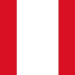
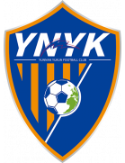
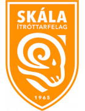
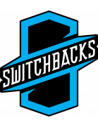
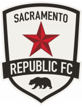
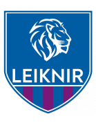
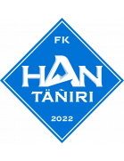
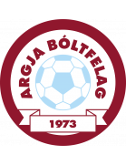
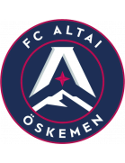

You are viewing !
🏆 EURO 2024 Matches
| Date | Fixture |
Odds |
Win |
Result |
Over ⚽ = over 0.5 ⚽⚽ = over 1.5 ⚽⚽⚽ = over 2.5 ... ► |
Alerts Home 🏥 = Considerable injuries 🏥🏥 = Major injuries 📉 = Dip in form Note, you may see injuries when expanding match but no alert here, meaning the model does not consider them important. |
Alerts Away 🏥 = Considerable injuries 🏥🏥 = Major injuries 📉 = Dip in form Note, you may see injuries when expanding match but no alert here, meaning the model does not consider them important. |
|
|---|---|---|---|---|---|---|---|---|
| Sun. 30 Jun. | England 17:00 Slovakia Form: WLWD Form: WWLD |
1.55 vs -1.55 | 1.45 | 75% | None | 😴 0.8 |
📉 Home team has a dip in form recently | 📉 Away team has a dip in form recently |
| Sun. 30 Jun. | Spain 20:00 Georgia Form: WWWW Form: WLDW |
1.21 vs -1.22 | 1.24 | 72% | None | ⚽⚽⚽ 3.59 |
📉 Away team has a dip in form recently | |
| Sat. 29 Jun. | Switzerland 17:00 Italy Form: WDWD Form: DWWL |
-0.58 vs 0.43 | 2.52 | 44% | None | 😴 0.82 |
📉 Home team has a dip in form recently | 📉 Away team has a dip in form recently |
| Sat. 29 Jun. | Germany 20:00 Denmark Form: DWWW Form: WWDD |
0.38 vs -0.52 | 1.69 | 40% | None | ⚽ 1.36 |
📉 Away team has a dip in form recently |
🏆 Copa America 2024 Matches
| Date | Fixture |
Odds |
Win |
Result |
Over ⚽ = over 0.5 ⚽⚽ = over 1.5 ⚽⚽⚽ = over 2.5 ... ► |
Alerts Home 🏥 = Considerable injuries 🏥🏥 = Major injuries 📉 = Dip in form Note, you may see injuries when expanding match but no alert here, meaning the model does not consider them important. |
Alerts Away 🏥 = Considerable injuries 🏥🏥 = Major injuries 📉 = Dip in form Note, you may see injuries when expanding match but no alert here, meaning the model does not consider them important. |
|
|---|---|---|---|---|---|---|---|---|
| Sat. 29 Jun. | Paraguay 02:00 Brazil Form: LDLW Form: WDWD |
-1.75 vs 1.37 | 1.36 | 74% | None | 😴 0 |
🏥🏥 📉 Home team has MAJOR injuries and a dip in form recently | 📉 Away team has a dip in form recently |
| Sun. 30 Jun. | Argentina 01:00  Peru Form: WWWW Form: DWDL |
1.22 vs -1.3 | 1.54 | 72% | None | 😴 0.09 |
📉 Away team has a dip in form recently | |
| Fri. 28 Jun. | Uruguay 02:00 Bolivia Form: LDWW Form: WLLL |
0.83 vs -1.02 | 1.16 | 63% | None | ⚽⚽ 2.22 |
📉 Away team has a dip in form recently | |
| Fri. 28 Jun. | Colombia 1:0' Costa Rica Form: WWWW Form: LDWW |
0.36 vs -0.65 | 1.35 | 39% | None | ⚽ 1.62 |
🏥 Away team has considerable injuries | |
| Sun. 30 Jun. | Canada 01:00 Chile Form: LDLW Form: LWDL |
0.09 vs -0.29 | 3.95 | 17% | None | ⚽ 1.13 |
📉 Home team has a dip in form recently | 🏥 📉 Away team has considerable injuries and a dip in form recently |
🌍 Global Matches
| Date | Fixture |
Odds |
Win |
Result |
Over ⚽ = over 0.5 ⚽⚽ = over 1.5 ⚽⚽⚽ = over 2.5 ... ► |
Alerts Home 🏥 = Considerable injuries 🏥🏥 = Major injuries 📉 = Dip in form Note, you may see injuries when expanding match but no alert here, meaning the model does not consider them important. |
Alerts Away 🏥 = Considerable injuries 🏥🏥 = Major injuries 📉 = Dip in form Note, you may see injuries when expanding match but no alert here, meaning the model does not consider them important. |
|
|---|---|---|---|---|---|---|---|---|
| Sun. 30 Jun. | Kaya FC-Iloilo 10:45 Stallion Laguna FC Form: LWWW Form: LDLW |
1.85 vs -2.73 | n/a | 79% | None | ⚽⚽⚽⚽⚽⚽ 6.9 |
📉 Away team has a dip in form recently | |
| Sat. 29 Jun. | Western Sydney Wanderers II 06:00 Wollongong Wolves FC Form: WWWL Form: DWLW |
1.79 vs -2.43 | n/a | 78% | None | ⚽⚽⚽ 3.76 |
📉 Home team has a dip in form recently | 📉 Away team has a dip in form recently |
| Fri. 28 Jun. | El Ahly Cairo 2:1 Pharco FC Form: WWWW Form: DLDL |
1.72 vs -2.72 | 1.26 | 77% | 1 | ⚽ 1.86 |
📉 Away team has a dip in form recently | |
| Fri. 28 Jun. | Athlone Town AFC 1:0 Treaty United Form: DDWD Form: DWLW |
1.69 vs -2.39 | 1.97 | 77% | 1 | ⚽ 1.61 |
📉 Home team has a dip in form recently | 📉 Away team has a dip in form recently |
| Fri. 28 Jun. | Víkingur Göta II 19:00 B71 Sandoy Form: WLDW Form: DDLL |
1.62 vs -2.29 | n/a | 76% | None | ⚽⚽ 2.73 |
📉 Home team has a dip in form recently | 📉 Away team has a dip in form recently |
| Sat. 29 Jun. | Tauranga City AFC 04:00 Auckland City FC Form: WWWD Form: LWWW |
-1.96 vs 1.57 | n/a | 76% | None | ⚽⚽⚽ 3.05 |
||
| Sun. 30 Jun. | England 17:00 Slovakia Form: WLWD Form: WWLD |
1.55 vs -1.55 | 1.45 | 75% | None | 😴 0.8 |
📉 Home team has a dip in form recently | 📉 Away team has a dip in form recently |
| Sun. 30 Jun. | FCI Levadia U21 10:30 FC Flora Tallinn U21 Form: LDWL Form: DWDL |
1.51 vs -1.98 | 1.04 | 75% | None | ⚽⚽ 2.48 |
📉 Home team has a dip in form recently | 📉 Away team has a dip in form recently |
| Sun. 30 Jun. | FK Istaravshan postponed Istiqlol Dushanbe Form: DWWD Form: WWWW |
-1.92 vs 1.5 | n/a | 75% | None | ⚽⚽ 2.19 |
||
| Sat. 29 Jun. | Paraguay 02:00 Brazil Form: LDLW Form: WDWD |
-1.75 vs 1.37 | 1.36 | 74% | None | 😴 0 |
🏥🏥 📉 Home team has MAJOR injuries and a dip in form recently | 📉 Away team has a dip in form recently |
| Fri. 28 Jun. | KÍ Klaksvík 18:30 NSÍ Runavík Form: WLLL Form: WDLL |
1.24 vs -1.78 | n/a | 72% | None | ⚽⚽ 2.4 |
📉 Home team has a dip in form recently | 📉 Away team has a dip in form recently |
| Sat. 29 Jun. | Eastern Suburbs AFC 04:00 East Coast Bays AFC Form: WDWW Form: DWLW |
1.22 vs -2.06 | n/a | 72% | None | ⚽ 1.73 |
📉 Away team has a dip in form recently | |
| Sun. 30 Jun. | Argentina 01:00 Peru Form: WWWW Form: DWDL |
1.22 vs -1.3 | 1.54 | 72% | None | 😴 0.09 |
📉 Away team has a dip in form recently | |
| Sun. 30 Jun. | Taiwan Leopard Cat FC 11:30 Taipei Vikings Form: LWLW Form: LLLL |
1.22 vs -1.89 | n/a | 72% | None | ⚽⚽⚽ 3.51 |
📉 Home team has a dip in form recently | 📉 Away team has a dip in form recently |
| Sat. 29 Jun. | Neman Grodno 16:00 FK Smorgon Form: WWWW Form: DDDL |
1.21 vs -2.14 | n/a | 72% | None | ⚽⚽ 2.57 |
📉 Away team has a dip in form recently | |
| Sun. 30 Jun. | Spain 20:00 Georgia Form: WWWW Form: WLDW |
1.21 vs -1.22 | 1.24 | 72% | None | ⚽⚽⚽ 3.59 |
📉 Away team has a dip in form recently | |
| Sun. 30 Jun. | CSD Colo-Colo 22:30 CD O'Higgins Form: WDLW Form: DDWW |
1.2 vs -1.97 | n/a | 72% | None | ⚽ 1.66 |
📉 Home team has a dip in form recently | |
| Sat. 29 Jun. | Gimcheon Sangmu 10:00 Daegu FC Form: WLLW Form: LLWW |
1.19 vs -2.01 | 2.14 | 72% | None | ⚽ 1.43 |
📉 Home team has a dip in form recently | 📉 Away team has a dip in form recently |
| Sun. 30 Jun. | Víkingur Reykjavík 20:15 Fram Reykjavík Form: WDLD Form: DWWL |
1.17 vs -2.04 | n/a | 72% | None | ⚽⚽ 2.7 |
📉 Home team has a dip in form recently | 📉 Away team has a dip in form recently |
| Fri. 28 Jun. | Derry City 19:45 Drogheda United FC Form: DDWW Form: LLLD |
1.12 vs -1.9 | 1.36 | 71% | None | ⚽⚽ 2.62 |
📉 Away team has a dip in form recently | |
| Sat. 29 Jun. | Utsiktens BK 14:00 IK Oddevold Form: WWLL Form: DLLD |
1.1 vs -1.53 | 2.28 | 71% | None | ⚽ 1.48 |
📉 Home team has a dip in form recently | 📉 Away team has a dip in form recently |
| Sun. 30 Jun. | New Taipei City Hang Yuan FC 08:30 Tainan City Taiwan Steel Form: WLLL Form: WWWW |
-1.53 vs 1.06 | n/a | 71% | None | ⚽⚽ 2.6 |
📉 Home team has a dip in form recently | |
| Fri. 28 Jun. | Sarpsborg 08 FF 1:2 FK Bodø/Glimt Form: LWLW Form: WLDD |
-1.58 vs 1.04 | 1.71 | 70% | 1 | ⚽⚽⚽ 3.9 |
📉 Home team has a dip in form recently | 📉 Away team has a dip in form recently |
| Sat. 29 Jun. | JK Trans Narva 12:30 FCI Levadia Form: WWWW Form: WWWW |
-1.44 vs 1.01 | 1.04 | 70% | None | ⚽⚽⚽ 3.16 |
||
| Sat. 29 Jun. | Degerfors IF 14:00 Sandvikens IF Form: WWDW Form: DWWW |
0.99 vs -1.56 | 1.95 | 70% | None | ⚽⚽ 2.58 |
||
| Sun. 30 Jun. | FK Tukums 2000 II 17:00 JDFS Alberts Riga Form: LLLL Form: DWWW |
0.94 vs -1.25 | n/a | 68% | None | ⚽⚽ 2.64 |
📉 Home team has a dip in form recently | |
| Sat. 29 Jun. | One Taguig FC 08:00 Don Bosco Garelli United Form: LDWW Form: LWLL |
0.94 vs -1.51 | n/a | 68% | None | ⚽⚽⚽⚽ 4.86 |
📉 Away team has a dip in form recently | |
| Sun. 30 Jun. | CA Colón 22:10 CA Atlanta Form: LWLD Form: WLDL |
0.94 vs -1.65 | 1.61 | 68% | None | ⚽ 1.29 |
📉 Home team has a dip in form recently | 📉 Away team has a dip in form recently |
| Sun. 30 Jun. | San Antonio FC 02:00 New Mexico United Form: DLLD Form: WLWL |
-1.61 vs 0.92 | n/a | 67% | None | ⚽ 1.08 |
📉 Home team has a dip in form recently | 📉 Away team has a dip in form recently |
| Sun. 30 Jun. | Suwon Samsung Bluewings 11:00 Ansan Greeners Form: DDLW Form: LLLW |
0.87 vs -1.76 | 1.49 | 65% | None | ⚽ 1.62 |
🏥 📉 Home team has considerable injuries and a dip in form recently | 📉 Away team has a dip in form recently |
| Sat. 29 Jun. | FF Jaro 14:00 JIPPO Joensuu Form: WDLD Form: WDLL |
0.84 vs -1.37 | n/a | 64% | None | ⚽ 1.81 |
📉 Home team has a dip in form recently | 📉 Away team has a dip in form recently |
| Fri. 28 Jun. | Uruguay 02:00 Bolivia Form: LDWW Form: WLLL |
0.83 vs -1.02 | 1.16 | 63% | None | ⚽⚽ 2.22 |
📉 Away team has a dip in form recently | |
| Fri. 28 Jun. | FC San Marcos 6:0 ADA Jaén Form: LWLW Form: WLLW |
0.83 vs -1.71 | 1.04 | 63% | 1 | ⚽⚽⚽ 3.12 |
📉 Home team has a dip in form recently | 📉 Away team has a dip in form recently |
| Sun. 30 Jun. | Belshina Bobruisk 16:00 BATE 2 Borisov Form: WWLD Form: DDDL |
0.83 vs -1.33 | n/a | 63% | None | ⚽ 1.79 |
📉 Home team has a dip in form recently | 📉 Away team has a dip in form recently |
| Fri. 28 Jun. | CR Flamengo 23:00 Cuiabá Esporte Clube (MT) Form: DWWL Form: WWDD |
0.82 vs -1.62 | n/a | 63% | None | ⚽ 1.6 |
🏥🏥 📉 Home team has MAJOR injuries and a dip in form recently | 📉 Away team has a dip in form recently |
| Sat. 29 Jun. | 07 Vestur 23:00 ÍF Fuglafjördur Form: LWLD Form: DLLL |
0.81 vs -1.74 | n/a | 63% | None | ⚽⚽ 2.4 |
📉 Home team has a dip in form recently | 📉 Away team has a dip in form recently |
| Fri. 28 Jun. | Cobh Ramblers FC 2:2 University College Dublin Form: DWLW Form: DDDW |
0.81 vs -1.47 | n/a | 62% | 0.5 | ⚽⚽ 2.08 |
📉 Home team has a dip in form recently | 📉 Away team has a dip in form recently |
| Sun. 30 Jun. | Atlanta United FC 00:30 Toronto FC Form: WLDW Form: DDLL |
0.8 vs -1.85 | 1.81 | 62% | None | ⚽⚽ 2.42 |
📉 Home team has a dip in form recently | 🏥 📉 Away team has considerable injuries and a dip in form recently |
| Sun. 30 Jun. | Yunnan Yukun  12:30 Liaoning Tieren Form: WDWW Form: LDDW |
0.78 vs -1.7 | 1.04 | 61% | None | ⚽ 1.9 |
📉 Away team has a dip in form recently | |
| Sun. 30 Jun. | Urawa Red Diamonds 10:30 Júbilo Iwata Form: LDLD Form: LLDD |
0.75 vs -1.56 | n/a | 60% | None | ⚽ 1.79 |
📉 Home team has a dip in form recently | 📉 Away team has a dip in form recently |
| Fri. 28 Jun. | B68 Toftir 18:00 HB Tórshavn Form: DLLD Form: LWLL |
-1.11 vs 0.74 | 1.06 | 60% | None | ⚽⚽ 2.47 |
📉 Home team has a dip in form recently | 📉 Away team has a dip in form recently |
| Sat. 29 Jun. | Birkenhead United 04:00 Melville United Form: WWDW Form: LLWL |
0.73 vs -1.65 | 1.01 | 59% | None | ⚽⚽⚽ 3.71 |
📉 Away team has a dip in form recently | |
| Sat. 29 Jun. | Shanghai Port 12:35 Zhejiang FC Form: WWWW Form: WLWW |
0.72 vs -1.32 | 1.35 | 59% | None | ⚽⚽⚽ 3.09 |
📉 Away team has a dip in form recently | |
| Sun. 30 Jun. | IFK Mariehamn 14:00 HJK Helsinki Form: WLDL Form: WWWL |
-1.41 vs 0.71 | 1.75 | 58% | None | ⚽ 1.86 |
📉 Home team has a dip in form recently | 📉 Away team has a dip in form recently |
| Sat. 29 Jun. | Moca FC Unknown Cibao FC Form: DWWW Form: DWWD |
-1.31 vs 0.7 | n/a | 58% | None | ⚽ 1.02 |
||
| Sun. 30 Jun. | Chengdu Rongcheng 12:35 Cangzhou Mighty Lions Form: LWDW Form: DLLL |
0.69 vs -1.6 | 1.14 | 58% | None | ⚽⚽ 2.83 |
📉 Away team has a dip in form recently | |
| Sun. 30 Jun. | CR Flamengo 22:30 Cruzeiro Esporte Clube Form: DWWL Form: LDLW |
0.68 vs -1.9 | 1.62 | 57% | None | ⚽ 1.09 |
🏥🏥 📉 Home team has MAJOR injuries and a dip in form recently | 🏥 📉 Away team has considerable injuries and a dip in form recently |
| Sun. 30 Jun. | CA San Martín (San Juan) 20:00 CA Güemes Form: WWWD Form: DWLD |
0.67 vs -1.49 | 1.71 | 57% | None | 😴 0.93 |
📉 Away team has a dip in form recently | |
| Sun. 30 Jun. | BK Maxline Vitebsk 15:00 FK Baranovichi Form: WLWL Form: WLWL |
0.67 vs -1.57 | n/a | 57% | None | ⚽⚽ 2.57 |
📉 Home team has a dip in form recently | 📉 Away team has a dip in form recently |
| Sat. 29 Jun. | Universidad O&M FC Unknown Atlético San Cristóbal Form: DDWW Form: LLLW |
0.66 vs -1.66 | n/a | 57% | None | ⚽⚽ 2.19 |
📉 Away team has a dip in form recently | |
| Sat. 29 Jun. | B36 Tórshavn 23:00  Skála IF Form: WDDD Form: WLWL |
0.65 vs -1.24 | 1.01 | 56% | None | ⚽⚽ 2.74 |
📉 Home team has a dip in form recently | 📉 Away team has a dip in form recently |
| Sun. 30 Jun. | Ceará Sporting Club 01:00 Ituano Futebol Clube (SP) Form: LLDL Form: LLLD |
0.65 vs -1.67 | n/a | 56% | None | ⚽ 1.33 |
📉 Home team has a dip in form recently | 📉 Away team has a dip in form recently |
| Sun. 30 Jun. | Arsenal Dzerzhinsk 18:00 Naftan Novopolotsk Form: LWLW Form: WLWD |
0.64 vs -1.57 | n/a | 56% | None | ⚽⚽⚽ 3.39 |
📉 Home team has a dip in form recently | 📉 Away team has a dip in form recently |
| Sun. 30 Jun. | JEF United Chiba 11:00 Kagoshima United Form: WWWW Form: DDLW |
0.64 vs -1.49 | 1.53 | 56% | None | ⚽⚽ 2.04 |
📉 Away team has a dip in form recently | |
| Fri. 28 Jun. | Ravshan Kulob 2:1 Barqchi Hisor Form: LWDD Form: LLLL |
0.64 vs -1.64 | n/a | 55% | 1 | ⚽ 1.68 |
📉 Home team has a dip in form recently | 📉 Away team has a dip in form recently |
| Fri. 28 Jun. | NSÍ Runavík 1:2 KÍ Klaksvík Form: WDLL Form: WLLL |
-1.24 vs 0.63 | n/a | 55% | 1 | ⚽⚽ 2.4 |
📉 Home team has a dip in form recently | 📉 Away team has a dip in form recently |
| Sat. 29 Jun. | FC KTP 14:00 Pallokerho-35 Form: WDWL Form: DWWW |
0.62 vs -1.03 | n/a | 55% | None | ⚽⚽ 2.74 |
📉 Home team has a dip in form recently | |
| Sun. 30 Jun. | Loyola FC 08:00 United City FC Form: WLDW Form: LDWD |
-0.87 vs 0.62 | 1.01 | 55% | None | ⚽⚽ 2.93 |
📉 Home team has a dip in form recently | 📉 Away team has a dip in form recently |
| Sun. 30 Jun. | Quang Nam FC 11:00 Thep Xanh Nam Dinh FC Form: WLLW Form: LWDD |
-1.14 vs 0.62 | n/a | 55% | None | ⚽⚽ 2.98 |
📉 Home team has a dip in form recently | 📉 Away team has a dip in form recently |
| Sat. 29 Jun. | BATE Borisov 18:00 Dinamo Minsk Form: WLWL Form: DWWW |
-0.89 vs 0.61 | n/a | 54% | None | ⚽⚽⚽ 3.92 |
📉 Home team has a dip in form recently | |
| Sat. 29 Jun. | Coritiba Foot Ball Club 20:00 Vila Nova Futebol Clube (GO) Form: LWDW Form: DWLW |
0.61 vs -1.68 | n/a | 54% | None | ⚽⚽ 2.01 |
🏥 Home team has considerable injuries | 📉 Away team has a dip in form recently |
| Sat. 29 Jun. | Atlético Pantoja Unknown Atlántico FC Form: LLWD Form: LLWW |
0.6 vs -1.29 | n/a | 54% | None | ⚽ 1.91 |
📉 Home team has a dip in form recently | 📉 Away team has a dip in form recently |
| Sun. 30 Jun. | Orange County SC 03:00 Oakland Roots SC Form: LWWL Form: LWWW |
0.59 vs -1.2 | 1.6 | 54% | None | ⚽ 1.63 |
📉 Home team has a dip in form recently | |
| Sun. 30 Jun. | Ha Noi FC 11:00 Becamex Binh Duong FC Form: WWWW Form: LLLL |
0.59 vs -1.3 | n/a | 54% | None | ⚽⚽ 2.06 |
📉 Away team has a dip in form recently | |
| Sat. 29 Jun. | Central Coast Mariners II 08:00 NWS Spirit Form: LLWL Form: WLLL |
0.59 vs -1.61 | n/a | 53% | None | ⚽⚽ 2.23 |
📉 Home team has a dip in form recently | 📉 Away team has a dip in form recently |
| Sun. 30 Jun. | AA Estudiantes (Río Cuarto) 20:00 CA Defensores Unidos (Zarate) Form: DLLW Form: DDDL |
0.56 vs -1.51 | 1.85 | 53% | None | 😴 0.72 |
📉 Home team has a dip in form recently | 📉 Away team has a dip in form recently |
| Sat. 29 Jun. | CD Universidad Católica 20:00 Santiago Wanderers Form: WWLW Form: LDWW |
0.52 vs -1.23 | n/a | 51% | None | ⚽ 1.71 |
📉 Home team has a dip in form recently | |
| Sun. 30 Jun. | CF América 21:00 Tigres UANL Form: DDWD Form: DWWL |
0.52 vs -1.24 | n/a | 51% | None | ⚽ 1.85 |
📉 Home team has a dip in form recently | 📉 Away team has a dip in form recently |
| Sat. 29 Jun. | Atlético Vega Real Unknown Delfines del Este FC Form: LDDW Form: DLWD |
0.5 vs -1.27 | 1.01 | 50% | None | 😴 0.88 |
📉 Home team has a dip in form recently | 📉 Away team has a dip in form recently |
| Sat. 29 Jun. | Turun Palloseura 16:00 SJK Seinäjoki II Form: WWWW Form: DDDW |
0.5 vs -1.15 | n/a | 50% | None | ⚽⚽ 2.35 |
📉 Away team has a dip in form recently | |
| Sat. 29 Jun. | CA Temperley 19:00 CA Brown (Adrogué) Form: WLLW Form: LDLD |
0.48 vs -1.31 | 1.78 | 49% | None | ⚽ 1.68 |
📉 Home team has a dip in form recently | 📉 Away team has a dip in form recently |
| Sun. 30 Jun. | Davao Aguilas FC 13:30 Maharlika Taguig FC Form: WLWD Form: WLDL |
0.47 vs -1.3 | n/a | 47% | None | ⚽ 1.65 |
📉 Home team has a dip in form recently | 📉 Away team has a dip in form recently |
| Sat. 29 Jun. | Wuhan Three Towns 12:00 Nantong Zhiyun Form: LLWL Form: DLLW |
0.46 vs -1.27 | 1.14 | 47% | None | ⚽ 1.95 |
📉 Home team has a dip in form recently | 📉 Away team has a dip in form recently |
| Sun. 30 Jun. | FK Kokand 1912 12:00 Olimpik-Mobiuz Tashkent Form: DLDD Form: LLDL |
0.46 vs -1.13 | n/a | 47% | None | ⚽⚽ 2.37 |
📉 Home team has a dip in form recently | 📉 Away team has a dip in form recently |
| Sun. 30 Jun. | Colorado Springs Switchbacks FC  02:00 Monterey Bay FC Form: WDWD Form: LDWW |
0.46 vs -1.24 | n/a | 47% | None | ⚽ 1.38 |
📉 Home team has a dip in form recently | |
| Sun. 30 Jun. | CD Palestino 20:00 AC Barnechea Form: LWDW Form: WDDW |
0.44 vs -1.15 | n/a | 45% | None | ⚽ 1.28 |
📉 Away team has a dip in form recently | |
| Sun. 30 Jun. | The Cong - Viettel FC 11:00 Song Lam Nghe An FC Form: WWWD Form: WWDL |
0.44 vs -1.27 | n/a | 45% | None | ⚽ 1.04 |
📉 Away team has a dip in form recently | |
| Sat. 29 Jun. | Switzerland 17:00 Italy Form: WDWD Form: DWWL |
-0.58 vs 0.43 | 2.52 | 44% | None | 😴 0.82 |
📉 Home team has a dip in form recently | 📉 Away team has a dip in form recently |
| Sun. 30 Jun. | Shimizu S-Pulse 10:00 Fagiano Okayama Form: LWWL Form: LDLW |
0.43 vs -1.17 | 1.04 | 44% | None | ⚽⚽ 2.12 |
📉 Home team has a dip in form recently | 📉 Away team has a dip in form recently |
| Sun. 30 Jun. | CA Aldosivi 19:00 CSD Madryn Form: WWWD Form: DWWD |
0.41 vs -1.26 | 1.19 | 43% | None | 😴 0.13 |
||
| Sun. 30 Jun. | Los Angeles FC 03:30 Colorado Rapids Form: WWWD Form: LLWW |
0.41 vs -1.23 | 1.54 | 43% | None | ⚽⚽ 2.04 |
📉 Away team has a dip in form recently | |
| Sat. 29 Jun. | Dynamic Herb Cebu FC 10:00 Philippine Army FC Form: WWWW Form: LLLL |
0.4 vs -1.07 | n/a | 42% | None | ⚽⚽⚽ 3.07 |
📉 Away team has a dip in form recently | |
| Sun. 30 Jun. | Audax Italiano 20:00 Deportes Santa Cruz Form: WLLW Form: WDLW |
0.4 vs -1.08 | n/a | 42% | None | ⚽ 1.44 |
📉 Home team has a dip in form recently | 📉 Away team has a dip in form recently |
| Sat. 29 Jun. | FK Panevezys 15:00 FK Banga Gargzdai Form: WWLL Form: WLLW |
0.4 vs -1.2 | 1.04 | 42% | None | 😴 0.96 |
🏥 📉 Home team has considerable injuries and a dip in form recently | 📉 Away team has a dip in form recently |
| Sat. 29 Jun. | Gimpo FC 11:00 Cheonan City Form: LWWW Form: WLDW |
0.4 vs -1.08 | 1.88 | 42% | None | ⚽ 1.08 |
📉 Away team has a dip in form recently | |
| Sun. 30 Jun. | New York Red Bulls 00:30 D.C. United Form: WLDD Form: LDLL |
0.38 vs -1.5 | 1.55 | 40% | None | ⚽⚽ 2.16 |
📉 Home team has a dip in form recently | 🏥 📉 Away team has considerable injuries and a dip in form recently |
| Sat. 29 Jun. | Germany 20:00 Denmark Form: DWWW Form: WWDD |
0.38 vs -0.52 | 1.69 | 40% | None | ⚽ 1.36 |
📉 Away team has a dip in form recently | |
| Fri. 28 Jun. | Colombia 1:0' Costa Rica Form: WWWW Form: LDWW |
0.36 vs -0.65 | 1.35 | 39% | None | ⚽ 1.62 |
🏥 Away team has considerable injuries | |
| Sun. 30 Jun. | Yelimay Semey 13:00 Zhetysu Taldykorgan Form: LDDW Form: DWLD |
0.35 vs -1.0 | n/a | 38% | None | ⚽ 1.76 |
📉 Home team has a dip in form recently | 📉 Away team has a dip in form recently |
| Sun. 30 Jun. | Loudoun United FC 00:30 Tampa Bay Rowdies Form: WLLD Form: WWLW |
-0.97 vs 0.34 | 1.07 | 38% | None | ⚽⚽ 2.34 |
📉 Home team has a dip in form recently | 📉 Away team has a dip in form recently |
| Fri. 28 Jun. | SK Brann 0:0 Strømsgodset IF Form: WDLW Form: LLWW |
0.34 vs -0.99 | 1.39 | 37% | 0.5 | ⚽⚽ 2.26 |
📉 Home team has a dip in form recently | 📉 Away team has a dip in form recently |
| Sat. 29 Jun. | Skanstes SK 17:00 JFK Ventspils Form: WLLL Form: WLWL |
0.34 vs -1.09 | n/a | 37% | None | 😴 0.91 |
📉 Home team has a dip in form recently | 📉 Away team has a dip in form recently |
| Fri. 28 Jun. | Smouha SC postponed Pyramids FC Form: DWLW Form: WWWW |
-0.94 vs 0.34 | 1.52 | 37% | None | ⚽⚽ 2.13 |
📉 Home team has a dip in form recently | |
| Sun. 30 Jun. | Avaí FC 15:00 Amazonas FC Form: DWDD Form: WLDW |
0.33 vs -0.96 | 1.66 | 37% | None | ⚽ 1.03 |
📉 Home team has a dip in form recently | 📉 Away team has a dip in form recently |
| Sat. 29 Jun. | Yokohama F. Marinos 11:00 Tokyo Verdy Form: LWLW Form: WWWL |
0.33 vs -0.9 | 1.98 | 36% | None | ⚽⚽ 2.88 |
📉 Home team has a dip in form recently | 📉 Away team has a dip in form recently |
| Sun. 30 Jun. | CD Ñublense 20:00 Rangers de Talca Form: DWWD Form: DWLD |
0.33 vs -0.86 | n/a | 36% | None | ⚽ 1.76 |
📉 Away team has a dip in form recently | |
| Sun. 30 Jun. | Sacramento Republic FC  04:00 Hartford Athletic Form: WDLW Form: WDLW |
0.33 vs -1.26 | 1.21 | 36% | None | ⚽ 1.83 |
📉 Home team has a dip in form recently | 📉 Away team has a dip in form recently |
| Sun. 30 Jun. | Club Atlético San Martín (Tucumán) 20:10 CD Maipú Form: WWWD Form: LDWW |
0.32 vs -1.02 | 1.71 | 36% | None | ⚽ 1.07 |
||
| Sun. 30 Jun. | ZSKA Dushanbe 15:00 Panjshir Balch Form: WDDW Form: DLWL |
0.32 vs -1.12 | n/a | 36% | None | 😴 0.88 |
📉 Home team has a dip in form recently | 📉 Away team has a dip in form recently |
| Sun. 30 Jun. | ZSKA Dushanbe 15:00 Panjshir Balch Form: WDDW Form: DLWL |
0.32 vs -1.12 | n/a | 36% | None | 😴 0.88 |
📉 Home team has a dip in form recently | 📉 Away team has a dip in form recently |
| Sat. 29 Jun. | Guangxi Pingguo Haliao 12:30 Chongqing Tonglianglong Form: LWDW Form: DWWW |
0.31 vs -0.96 | 1.72 | 35% | None | ⚽ 1.27 |
||
| Sat. 29 Jun. | Ittihad Alexandria SC 15:30 El Dakhlia SC Form: WDWL Form: LWLW |
0.31 vs -1.16 | 1.53 | 35% | None | 😴 0.78 |
📉 Home team has a dip in form recently | 📉 Away team has a dip in form recently |
| Sat. 29 Jun. | Wuxi Wugo 12:30 Jiangxi Lushan Form: DLLL Form: LLDL |
0.3 vs -1.09 | 1.04 | 34% | None | ⚽⚽ 2.18 |
📉 Home team has a dip in form recently | 📉 Away team has a dip in form recently |
| Sat. 29 Jun. | Zamalek SC 17:00 Cleopatra FC Form: WWLW Form: LWWL |
0.3 vs -1.32 | 1.73 | 34% | None | ⚽⚽ 2.36 |
📉 Home team has a dip in form recently | 📉 Away team has a dip in form recently |
| Sun. 30 Jun. | Qingdao Red Lions 12:30 Heilongjiang Ice City Form: DDWL Form: LDWL |
0.3 vs -1.24 | 1.04 | 34% | None | ⚽⚽ 2.37 |
📉 Home team has a dip in form recently | 📉 Away team has a dip in form recently |
| Sun. 30 Jun. | Volna Pinsk 15:00 FK Ostrovets Form: WDLW Form: WWDD |
0.3 vs -1.02 | n/a | 34% | None | ⚽ 1.97 |
📉 Home team has a dip in form recently | 📉 Away team has a dip in form recently |
| Fri. 28 Jun. | Järvenpään Palloseura 2:2 Käpylän Pallo Form: WDDL Form: LLDL |
0.29 vs -1.14 | n/a | 34% | 0.5 | ⚽⚽⚽ 3.25 |
📉 Home team has a dip in form recently | 📉 Away team has a dip in form recently |
| Fri. 28 Jun. | Cuniburo FC 1:0 Guayaquil City FC Form: WWWW Form: DDDL |
-1.4 vs 0.29 | n/a | 33% | 0 | 😴 0.94 |
🏥 Home team has considerable injuries | 📉 Away team has a dip in form recently |
| Fri. 28 Jun. | Hamilton Wanderers 1:1 Auckland United FC Form: LLLL Form: WDLD |
-0.87 vs 0.29 | n/a | 33% | 0.5 | ⚽⚽ 2.64 |
📉 Home team has a dip in form recently | 📉 Away team has a dip in form recently |
| Sat. 29 Jun. | CA Estudiantes 19:10 CA San Miguel Form: WLWL Form: WLWW |
0.29 vs -1.02 | 1.04 | 33% | None | 😴 0.63 |
📉 Home team has a dip in form recently | 📉 Away team has a dip in form recently |
| Sun. 30 Jun. | Nasaf Qarshi postponed Navbahor Namangan Form: WLWD Form: DDDL |
0.28 vs -0.86 | n/a | 33% | None | ⚽ 1.25 |
📉 Home team has a dip in form recently | 📉 Away team has a dip in form recently |
| Sun. 30 Jun. | Rockdale Ilinden FC 06:00 Hills United Form: WLWW Form: LLWL |
0.28 vs -1.16 | n/a | 33% | None | ⚽⚽ 2.96 |
📉 Home team has a dip in form recently | 📉 Away team has a dip in form recently |
| Fri. 28 Jun. | IK Brage 2:2 Gefle IF Form: LLWL Form: LWLL |
0.28 vs -1.16 | 1.61 | 32% | 0.5 | ⚽ 1.52 |
📉 Home team has a dip in form recently | 📉 Away team has a dip in form recently |
| Sun. 30 Jun. | Stade Tunisien 17:00 Club Athlétique Bizertin Form: DDWW Form: DWWW |
0.28 vs -1.11 | n/a | 32% | None | 😴 0.93 |
||
| Sun. 30 Jun. | Guarani Futebol Clube (SP) 22:30 Associação Atlética Ponte Preta Form: LLLD Form: LWLW |
0.27 vs -1.1 | n/a | 32% | None | 😴 0.87 |
📉 Home team has a dip in form recently | 📉 Away team has a dip in form recently |
| Fri. 28 Jun. | CD Magallanes 01:00 CDP Curicó Unido Form: LWWW Form: DWDW |
0.27 vs -1.25 | 1.12 | 32% | None | ⚽⚽ 2.04 |
||
| Sat. 29 Jun. | Club Deportes Iquique 01:30 Deportes Antofagasta Form: DLLW Form: WWDW |
0.27 vs -0.98 | 1.05 | 32% | None | ⚽⚽ 2.98 |
📉 Home team has a dip in form recently | |
| Sun. 30 Jun. | Qingdao West Coast 11:00 Shanghai Shenhua Form: DLLW Form: WDWW |
-0.65 vs 0.27 | 1.04 | 31% | None | ⚽ 1.62 |
📉 Home team has a dip in form recently | |
| Sun. 30 Jun. | Fjölnir Reykjavík 15:00 ÍF Grótta Form: WLDW Form: WDWD |
0.27 vs -1.18 | n/a | 31% | None | ⚽⚽ 2.09 |
📉 Home team has a dip in form recently | 📉 Away team has a dip in form recently |
| Sat. 29 Jun. | Paide Linnameeskond U21 10:30 FC Elva Form: WLWL Form: LLLD |
0.27 vs -1.1 | 1.7 | 31% | None | ⚽⚽⚽ 3.02 |
📉 Home team has a dip in form recently | 📉 Away team has a dip in form recently |
| Sat. 29 Jun. | Comerciantes FC 21:15 Santos FC Nazca Form: WWWD Form: WWLW |
0.26 vs -1.16 | n/a | 31% | None | 😴 0.71 |
📉 Away team has a dip in form recently | |
| Sat. 29 Jun. | Busan IPark 11:30 Seongnam FC Form: LLDD Form: WWWL |
0.26 vs -1.01 | 1.53 | 31% | None | ⚽ 1.93 |
📉 Home team has a dip in form recently | 📉 Away team has a dip in form recently |
| Sun. 30 Jun. | Athletic Club Taipei 08:30 Ming Chuan University Form: WWWL Form: LLWL |
0.26 vs -1.23 | n/a | 31% | None | ⚽ 1.48 |
🏥 📉 Home team has considerable injuries and a dip in form recently | 📉 Away team has a dip in form recently |
| Sun. 30 Jun. | Thróttur Reykjavík 20:15 UMF Grindavík Form: DWLL Form: WDDD |
-0.95 vs 0.26 | n/a | 31% | None | ⚽⚽ 2.43 |
📉 Home team has a dip in form recently | 📉 Away team has a dip in form recently |
| Fri. 28 Jun. | São Paulo Futebol Clube 2:1 Criciúma Esporte Clube Form: DDLL Form: LWDW |
0.26 vs -1.27 | n/a | 30% | 1 | ⚽ 1.95 |
🏥 📉 Home team has considerable injuries and a dip in form recently | |
| Sun. 30 Jun. | Cerezo Osaka 10:00 Nagoya Grampus Form: DWWD Form: WLDL |
0.25 vs -1.21 | 2.42 | 30% | None | ⚽ 1.13 |
🏥 📉 Away team has considerable injuries and a dip in form recently | |
| Sat. 29 Jun. | Atlético Ottawa 00:00 Forge FC Form: WDLW Form: LWLD |
0.25 vs -0.84 | 1.57 | 30% | None | ⚽ 1.4 |
📉 Home team has a dip in form recently | 📉 Away team has a dip in form recently |
| Sat. 29 Jun. | Tianjin Jinmen Tiger 12:35 Shenzhen Peng City Form: DLLW Form: DLWW |
0.23 vs -0.51 | 1.91 | 28% | None | ⚽ 1.71 |
📉 Home team has a dip in form recently | 📉 Away team has a dip in form recently |
| Fri. 28 Jun. | Leevon PPK 17:00 FK RFS II Form: LLWL Form: WWWW |
-0.86 vs 0.22 | n/a | 28% | None | ⚽ 1.54 |
📉 Home team has a dip in form recently | |
| Sat. 29 Jun. | CA Agropecuario 19:00 CA Racing (Córdoba) Form: WDWL Form: DLWD |
0.22 vs -1.04 | 1.04 | 28% | None | ⚽ 1.09 |
📉 Home team has a dip in form recently | 📉 Away team has a dip in form recently |
| Sat. 29 Jun. | Shakhter Soligorsk 14:00 Torpedo-BelAZ Zhodino Form: LDDD Form: WWWW |
-0.74 vs 0.21 | n/a | 27% | None | ⚽ 1.41 |
📉 Home team has a dip in form recently | |
| Fri. 28 Jun. | Shelbourne FC 19:45 Galway United FC Form: WWLL Form: WWLW |
0.21 vs -0.71 | 2.28 | 27% | None | ⚽ 1.39 |
📉 Home team has a dip in form recently | 📉 Away team has a dip in form recently |
| Sun. 30 Jun. | Changchun Yatai 12:35 Qingdao Hainiu Form: DDLW Form: DWWW |
0.21 vs -1.0 | 1.04 | 27% | None | ⚽ 1.63 |
📉 Home team has a dip in form recently | |
| Fri. 28 Jun. | FC Kuressaare 0:2 Paide Linnameeskond Form: LDLD Form: LLLW |
-0.86 vs 0.21 | 1.43 | 27% | 1 | ⚽⚽ 2.51 |
📉 Home team has a dip in form recently | 📉 Away team has a dip in form recently |
| Sat. 29 Jun. | Vegalta Sendai 11:00 Tochigi SC Form: WDLD Form: LDLW |
0.21 vs -1.09 | 1.76 | 27% | None | ⚽ 1.5 |
📉 Home team has a dip in form recently | 📉 Away team has a dip in form recently |
| Fri. 28 Jun. | Kerry Football Club 1:1 Wexford FC Form: LWLW Form: DLLD |
-0.8 vs 0.2 | 2.26 | 26% | 0.5 | ⚽ 1.53 |
📉 Home team has a dip in form recently | 📉 Away team has a dip in form recently |
| Sat. 29 Jun. | Ordabasy Shymkent 17:00 Kaysar Kyzylorda Form: DDWW Form: WLWD |
0.2 vs -0.98 | n/a | 26% | None | ⚽ 1.15 |
📉 Away team has a dip in form recently | |
| Sun. 30 Jun. | Isloch Minsk Region 16:00 Dnepr Mogilev Form: LLWW Form: LLLL |
0.2 vs -0.87 | n/a | 26% | None | ⚽ 1.42 |
📉 Home team has a dip in form recently | 📉 Away team has a dip in form recently |
| Sun. 30 Jun. | Las Vegas Lights FC 03:30 Pittsburgh Riverhounds SC Form: DWDD Form: LDLL |
0.18 vs -0.87 | 1.6 | 25% | None | ⚽ 1.34 |
📉 Home team has a dip in form recently | 📉 Away team has a dip in form recently |
| Sat. 29 Jun. | Daejeon Hana Citizen 12:00 Suwon FC Form: WDLW Form: WWLL |
0.18 vs -1.04 | 2.88 | 24% | None | ⚽⚽ 2.14 |
📉 Home team has a dip in form recently | 📉 Away team has a dip in form recently |
| Sun. 30 Jun. | Dalvík/Reynir 17:00  Leiknir Reykjavík Form: LWLD Form: LLWL |
0.18 vs -0.72 | n/a | 24% | None | ⚽⚽ 2.45 |
📉 Home team has a dip in form recently | 📉 Away team has a dip in form recently |
| Sun. 30 Jun. | CD Morón 19:00 Club Almagro Form: LWLL Form: LDDD |
0.17 vs -1.12 | 1.04 | 24% | None | ⚽ 1.46 |
📉 Home team has a dip in form recently | 📉 Away team has a dip in form recently |
| Sat. 29 Jun. | Gimnasia y Esgrima de Mendoza 19:00 CA Chaco For Ever Form: WWWD Form: LWDD |
0.17 vs -0.95 | 1.11 | 24% | None | ⚽⚽ 2.42 |
📉 Away team has a dip in form recently | |
| Sun. 30 Jun. | Nashville SC 01:30 Inter Miami CF Form: WLDW Form: WLDW |
-1.23 vs 0.16 | n/a | 23% | None | ⚽⚽⚽ 3.44 |
📉 Home team has a dip in form recently | 🏥🏥 📉 Away team has MAJOR injuries and a dip in form recently |
| Sat. 29 Jun. | FK Orsha 15:00 Energetik-BGU Minsk Form: DDDW Form: WLLL |
0.16 vs -1.03 | n/a | 22% | None | ⚽ 1.66 |
📉 Home team has a dip in form recently | 📉 Away team has a dip in form recently |
| Sat. 29 Jun. | Manila Montet FC 13:00 Philippine Air Force FC Form: LLLL Form: LLLL |
-0.9 vs 0.15 | n/a | 22% | None | ⚽⚽⚽⚽⚽⚽ 6.94 |
📉 Home team has a dip in form recently | 📉 Away team has a dip in form recently |
| Sat. 29 Jun. | APIA Leichhardt FC 08:30 St George Saints FC Form: WWLL Form: DWLW |
0.15 vs -0.99 | n/a | 22% | None | ⚽⚽ 2.53 |
📉 Home team has a dip in form recently | 📉 Away team has a dip in form recently |
| Sat. 29 Jun. | FC Hoyvík 15:00 TB Tvøroyri Form: LLLL Form: DWLD |
-0.92 vs 0.15 | 1.01 | 22% | None | ⚽ 1.55 |
📉 Home team has a dip in form recently | 📉 Away team has a dip in form recently |
| Sun. 30 Jun. | New Zealand 05:00 Vanuatu Form: LWWW Form: LWLW |
0.15 vs -0.7 | n/a | 22% | None | ⚽⚽ 2.27 |
📉 Away team has a dip in form recently | |
| Sat. 29 Jun. | Ogre United 13:00 FK Smiltene/BJSS Form: LWLW Form: LLDW |
0.14 vs -0.99 | n/a | 21% | None | ⚽ 1.11 |
📉 Home team has a dip in form recently | 📉 Away team has a dip in form recently |
| Fri. 28 Jun. | FH Hafnarfjördur 1:0 Breidablik Kópavogur Form: WWDD Form: LDLL |
-0.77 vs 0.14 | 2.14 | 21% | 0 | ⚽⚽ 2.94 |
📉 Home team has a dip in form recently | 📉 Away team has a dip in form recently |
| Sat. 29 Jun. | CD Cobreloa 01:30 San Marcos de Arica Form: DLLW Form: WWWW |
0.14 vs -0.8 | 1.04 | 21% | None | ⚽⚽ 2.78 |
📉 Home team has a dip in form recently | |
| Sat. 29 Jun. | SJK Seinäjoki 10:00 FC Haka Form: LWWD Form: LWWW |
0.13 vs -0.69 | 1.74 | 21% | None | ⚽⚽ 2.57 |
||
| Sat. 29 Jun. | Thespa Gunma 11:00 Fujieda MYFC Form: DDLL Form: WLWL |
0.13 vs -0.99 | 3.1 | 21% | None | ⚽ 1.13 |
📉 Home team has a dip in form recently | 📉 Away team has a dip in form recently |
| Fri. 28 Jun. | Bay Olympic FC 2:0 Western Springs AFC Form: LLWL Form: WWDL |
-0.49 vs 0.13 | n/a | 20% | 0 | ⚽⚽ 2.38 |
📉 Home team has a dip in form recently | 📉 Away team has a dip in form recently |
| Sat. 29 Jun. | FK Eskhata 13:30 FK Khujand Form: DLWW Form: WDDD |
0.12 vs -1.0 | n/a | 20% | None | ⚽ 1.24 |
📉 Home team has a dip in form recently | 📉 Away team has a dip in form recently |
| Sun. 30 Jun. | Clube Atlético Mineiro 15:00 Atlético Clube Goianiense Form: LWWD Form: WLDD |
0.12 vs -1.05 | n/a | 20% | None | ⚽ 1.9 |
🏥🏥 Home team has MAJOR injuries | 📉 Away team has a dip in form recently |
| Sun. 30 Jun. | Örgryte IS 14:00 Skövde AIK Form: LLWD Form: WLDL |
0.12 vs -0.9 | 1.7 | 20% | None | ⚽⚽ 2.02 |
📉 Home team has a dip in form recently | 📉 Away team has a dip in form recently |
| Sat. 29 Jun. | Tartu JK Welco 10:30 Kalev Tallinn U21 Form: WDWD Form: LWLL |
0.12 vs -0.84 | 1.1 | 19% | None | ⚽⚽⚽ 3.18 |
📉 Home team has a dip in form recently | 📉 Away team has a dip in form recently |
| Fri. 28 Jun. | SD Family Astana 3:0  FC Khan Tengri Form: LLDW Form: DWWW |
0.12 vs -0.78 | n/a | 19% | 1 | ⚽⚽ 2.06 |
📉 Home team has a dip in form recently | |
| Sun. 30 Jun. | UMF Njardvík 20:15 UMF Afturelding Form: DWLL Form: DWWD |
-0.73 vs 0.11 | n/a | 19% | None | ⚽⚽⚽ 3.45 |
📉 Home team has a dip in form recently | |
| Sun. 30 Jun. | Gwangju FC 11:00 Jeju United Form: WWWL Form: LWLW |
0.11 vs -1.29 | n/a | 19% | None | ⚽ 1.87 |
🏥 📉 Home team has considerable injuries and a dip in form recently | 🏥 📉 Away team has considerable injuries and a dip in form recently |
| Sat. 29 Jun. | CD Cobresal 20:00 Deportes Copiapó Form: DLLL Form: LWWW |
0.11 vs -1.14 | n/a | 19% | None | ⚽⚽ 2.39 |
📉 Home team has a dip in form recently | |
| Fri. 28 Jun. | Sydney FC II 10:30 Marconi Stallions FC Form: DLLL Form: WLWW |
0.11 vs -1.14 | n/a | 19% | None | ⚽⚽⚽ 3.12 |
🏥🏥 📉 Home team has MAJOR injuries and a dip in form recently | 📉 Away team has a dip in form recently |
| Sun. 30 Jun. | Futuro 08:30 Taiwan Power Company Form: LWWW Form: WLLW |
0.11 vs -0.63 | n/a | 18% | None | ⚽ 1.72 |
📉 Away team has a dip in form recently | |
| Fri. 28 Jun. | Dynamo Brest 1:1 FK Vitebsk Form: WLLW Form: WWDL |
0.1 vs -0.61 | n/a | 18% | 0.5 | ⚽ 1.93 |
📉 Home team has a dip in form recently | 📉 Away team has a dip in form recently |
| Sun. 30 Jun. | FK Aktobe 15:00 Tobol Kostanay Form: WWDL Form: WLWL |
0.09 vs -0.83 | n/a | 18% | None | ⚽ 1.36 |
📉 Home team has a dip in form recently | 📉 Away team has a dip in form recently |
| Sun. 30 Jun. | Portland Timbers 03:30 Minnesota United FC Form: WDDW Form: WDLL |
0.09 vs -0.74 | 1.93 | 17% | None | ⚽⚽⚽ 3.12 |
📉 Home team has a dip in form recently | 📉 Away team has a dip in form recently |
| Sat. 29 Jun. | Charleston Battery 00:30 North Carolina FC Form: LLDD Form: DWLW |
0.09 vs -0.59 | n/a | 17% | None | ⚽ 1.86 |
📉 Home team has a dip in form recently | 📉 Away team has a dip in form recently |
| Sat. 29 Jun. | Bumprom Gomel 16:00 Lokomotiv Gomel Form: WWDW Form: LDLL |
0.09 vs -0.78 | n/a | 17% | None | ⚽ 1.76 |
📉 Away team has a dip in form recently | |
| Sun. 30 Jun. | Canada 01:00 Chile Form: LDLW Form: LWDL |
0.09 vs -0.29 | 3.95 | 17% | None | ⚽ 1.13 |
📉 Home team has a dip in form recently | 🏥 📉 Away team has considerable injuries and a dip in form recently |
| Sun. 30 Jun. | Seattle Sounders FC 03:30 Chicago Fire FC Form: DLWD Form: DDWW |
0.09 vs -1.06 | 1.68 | 17% | None | ⚽ 1.57 |
📉 Home team has a dip in form recently | |
| Sat. 29 Jun. | Guangzhou FC 12:30 Nanjing City Form: LWWL Form: LWDW |
0.08 vs -0.99 | 1.08 | 17% | None | ⚽ 1.69 |
📉 Home team has a dip in form recently | |
| Sat. 29 Jun. | Botafogo FC 21:00 Sport Club do Recife Form: LWWW Form: WLWD |
-0.64 vs 0.08 | 2.46 | 17% | None | ⚽ 1.32 |
📉 Away team has a dip in form recently | |
| Sat. 29 Jun. | Blacktown City FC 10:00 St. George City FA Form: WLDW Form: WLWW |
0.08 vs -0.53 | n/a | 16% | None | ⚽⚽ 2.11 |
📉 Home team has a dip in form recently | 📉 Away team has a dip in form recently |
| Sat. 29 Jun. | Qyzyljar Petropavlovsk 13:00 Shakhter Karaganda Form: LDWD Form: WLLL |
0.08 vs -1.03 | 1.04 | 16% | None | 😴 0.82 |
📉 Home team has a dip in form recently | 📉 Away team has a dip in form recently |
| Fri. 28 Jun. | Dinamo Batumi 5:6 AET Torpedo Kutaisi Form: LWLD Form: WWWW |
0.07 vs -0.6 | 1.82 | 16% | 0 | ⚽⚽ 2.87 |
📉 Home team has a dip in form recently | |
| Fri. 28 Jun. | Dundalk FC 19:45 Waterford FC Form: LDWL Form: WLWL |
0.07 vs -0.99 | 2.34 | 16% | None | ⚽⚽ 2.02 |
🏥🏥 📉 Home team has MAJOR injuries and a dip in form recently | 📉 Away team has a dip in form recently |
| Fri. 28 Jun. | FC Inter Turku 3:1 Vaasan Palloseura Form: WLWD Form: DDWD |
-0.29 vs 0.07 | 2.88 | 15% | 0 | ⚽⚽ 2.13 |
📉 Home team has a dip in form recently | 📉 Away team has a dip in form recently |
| Sun. 30 Jun. | Incheon United 11:00 Gangwon FC Form: DWLL Form: WLLL |
0.06 vs -1.05 | 2.88 | 15% | None | ⚽ 1.92 |
📉 Home team has a dip in form recently | 📉 Away team has a dip in form recently |
| Fri. 28 Jun. | HK Kópavogs 1:2 KA Akureyri Form: LWLL Form: WLLW |
-0.76 vs 0.06 | 1.84 | 15% | 1 | ⚽⚽ 2.37 |
📉 Home team has a dip in form recently | 📉 Away team has a dip in form recently |
| Fri. 28 Jun. | FC Qizilqum 1:0 FC OKMK Olmaliq Form: LDLD Form: WLWW |
-0.61 vs 0.06 | n/a | 14% | 0 | ⚽⚽ 2.86 |
📉 Home team has a dip in form recently | 📉 Away team has a dip in form recently |
| Sun. 30 Jun. | Academia Deportiva Cantolao 21:00 Ayacucho FC Form: LLLD Form: WLLW |
0.06 vs -0.76 | n/a | 14% | None | ⚽ 1.39 |
📉 Home team has a dip in form recently | 📉 Away team has a dip in form recently |
| Fri. 28 Jun. | Cork City FC 1:0 Bray Wanderers Form: DLDW Form: LDWL |
0.05 vs -1.25 | 1.56 | 14% | 1 | ⚽ 1.13 |
📉 Home team has a dip in form recently | 🏥🏥 📉 Away team has MAJOR injuries and a dip in form recently |
| Sat. 29 Jun. | SK Super Nova 15:00 AFA Olaine Form: WWWW Form: LWDL |
0.05 vs -0.85 | n/a | 14% | None | ⚽ 1.8 |
📉 Away team has a dip in form recently | |
| Fri. 28 Jun. | St. Patrick's Athletic 19:45 Bohemian Football Club Form: WWLD Form: LWDL |
0.04 vs -0.72 | 2.0 | 14% | None | ⚽⚽ 2.21 |
📉 Home team has a dip in form recently | 📉 Away team has a dip in form recently |
| Fri. 28 Jun. | AB Argir  18:00 KÍ Klaksvík II Form: LDLD Form: DWLW |
-0.38 vs 0.04 | n/a | 13% | None | ⚽⚽⚽ 3.05 |
📉 Home team has a dip in form recently | 📉 Away team has a dip in form recently |
| Sat. 29 Jun. | Sydney Olympic FC 08:00 Manly United FC Form: WLWD Form: LWWL |
0.03 vs -0.67 | n/a | 12% | None | ⚽⚽ 2.23 |
📉 Home team has a dip in form recently | 📉 Away team has a dip in form recently |
| Fri. 28 Jun. | ABFF U17 0:2 Dinamo 2 Minsk Form: LLLW Form: DWLL |
-0.63 vs 0.03 | n/a | 12% | 1 | ⚽ 1.11 |
📉 Home team has a dip in form recently | 📉 Away team has a dip in form recently |
| Sun. 30 Jun. | Shanghai Jiading Huilong 12:30 Dalian Yingbo Form: LLWL Form: LDLW |
-0.7 vs 0.03 | 1.04 | 12% | None | 😴 0.55 |
📉 Home team has a dip in form recently | 📉 Away team has a dip in form recently |
| Sun. 30 Jun. | Houston Dynamo FC 01:30 Charlotte FC Form: WDDD Form: LWWD |
0.02 vs -0.79 | 1.87 | 12% | None | ⚽⚽ 2.16 |
📉 Home team has a dip in form recently | |
| Sun. 30 Jun. | Paysandu SC 20:00 Operário Ferroviário Esporte Clube (PR) Form: WLWD Form: WWWW |
0.02 vs -0.69 | 2.06 | 12% | None | 😴 0.68 |
📉 Home team has a dip in form recently | |
| Sun. 30 Jun. | Foshan Nanshi 12:30 Yanbian Longding Form: DLDW Form: LWLL |
0.02 vs -1.0 | 1.04 | 11% | None | ⚽ 1.81 |
📉 Home team has a dip in form recently | 📉 Away team has a dip in form recently |
| Sun. 30 Jun. | Blaublitz Akita 05:00 Montedio Yamagata Form: DDLL Form: DDWL |
-0.79 vs 0.01 | 1.04 | 11% | None | 😴 0.79 |
📉 Home team has a dip in form recently | 📉 Away team has a dip in form recently |
| Sat. 29 Jun. | Harju JK Laagri 10:30 FC Tallinn Form: WWDD Form: WWWW |
0.01 vs -0.42 | 1.1 | 11% | None | ⚽⚽⚽ 3.29 |
📉 Home team has a dip in form recently | |
| Fri. 28 Jun. | Sligo Rovers 19:45 Shamrock Rovers Form: DWWL Form: LWLW |
-0.88 vs 0.01 | 1.41 | 11% | None | ⚽ 1.57 |
📉 Home team has a dip in form recently | 📉 Away team has a dip in form recently |
| Fri. 28 Jun. | Longford Town FC 1:1 Finn Harps Form: DLDL Form: LWDL |
0.01 vs -0.73 | 3.15 | 11% | 0.5 | ⚽ 1.39 |
📉 Home team has a dip in form recently | 📉 Away team has a dip in form recently |
| Sat. 29 Jun. | Tokushima Vortis 11:00 V-Varen Nagasaki Form: WLWL Form: LDWD |
-0.68 vs 0.0 | 2.2 | 10% | None | ⚽ 1.81 |
📉 Home team has a dip in form recently | 📉 Away team has a dip in form recently |
| Fri. 28 Jun. | ÍA Akranes 3:2 Valur Reykjavík Form: DWLL Form: LLLD |
-0.87 vs 0.0 | 1.66 | 10% | 0 | ⚽⚽⚽⚽ 4.19 |
📉 Home team has a dip in form recently | 📉 Away team has a dip in form recently |
| Sun. 30 Jun. | FK Slutsk 14:00 FK Minsk Form: LWLL Form: LLDD |
-0.01 vs -0.86 | n/a | 10% | None | 😴 0.84 |
📉 Home team has a dip in form recently | 📉 Away team has a dip in form recently |
| Sun. 30 Jun. | FC Tokyo 10:30 Avispa Fukuoka Form: LWDW Form: WWWD |
-0.01 vs -0.65 | 1.04 | 10% | None | ⚽⚽ 2.0 |
||
| Sun. 30 Jun. | IF Gnistan 14:00 Ekenäs IF Form: DWLL Form: LWLW |
-0.02 vs -0.48 | 1.69 | 10% | None | ⚽⚽ 2.75 |
📉 Home team has a dip in form recently | 📉 Away team has a dip in form recently |
| Sat. 29 Jun. | Manurewa AFC 04:00 West Coast Rangers Form: LWDL Form: DWLL |
-0.03 vs -0.87 | n/a | 9% | None | ⚽⚽⚽ 3.09 |
📉 Home team has a dip in form recently | 📉 Away team has a dip in form recently |
| Fri. 28 Jun. | Sogdiana Jizzakh 4:2 Dinamo Samarqand Form: LWLW Form: DWLW |
-0.03 vs -0.82 | n/a | 9% | 1 | ⚽⚽ 2.01 |
📉 Home team has a dip in form recently | 📉 Away team has a dip in form recently |
| Sun. 30 Jun. | Fortaleza Esporte Clube 20:00 Esporte Clube Juventude Form: LLLD Form: DWLW |
-0.03 vs -0.96 | 1.67 | 9% | None | ⚽⚽ 2.16 |
🏥 📉 Home team has considerable injuries and a dip in form recently | 📉 Away team has a dip in form recently |
| Sun. 30 Jun. | CA Mitre 20:00 AMSD Atlético de Rafaela Form: WDWD Form: LLLL |
-0.03 vs -0.78 | 1.04 | 9% | None | 😴 0.65 |
📉 Home team has a dip in form recently | 📉 Away team has a dip in form recently |
| Sat. 29 Jun. | Mito HollyHock 10:00 Renofa Yamaguchi Form: LLWW Form: WLWW |
-0.03 vs -0.71 | 3.05 | 9% | None | ⚽ 1.22 |
📉 Home team has a dip in form recently | 📉 Away team has a dip in form recently |
| Sat. 29 Jun. | Jeonbuk Hyundai Motors 11:00 FC Seoul Form: LDLL Form: LDWW |
-0.03 vs -0.9 | 2.62 | 9% | None | ⚽ 1.96 |
📉 Home team has a dip in form recently | |
| Sun. 30 Jun. | Sporting Kansas City 01:30 Austin FC Form: LWLL Form: LLLD |
-0.03 vs -1.01 | 1.85 | 9% | None | ⚽⚽ 2.51 |
📉 Home team has a dip in form recently | 📉 Away team has a dip in form recently |
| Sat. 29 Jun. | New York City FC 00:30 Orlando City SC Form: WWLL Form: DLLD |
-0.04 vs -0.47 | 1.92 | 9% | None | ⚽ 1.13 |
📉 Home team has a dip in form recently | 📉 Away team has a dip in form recently |
| Sun. 30 Jun. | Torpedo-BelAZ 2 Zhodino 14:00 Shakhter 2 Soligorsk Form: LWLL Form: DWWL |
-0.04 vs -0.62 | n/a | 9% | None | ⚽⚽ 2.11 |
📉 Home team has a dip in form recently | 📉 Away team has a dip in form recently |
| Fri. 28 Jun. | Odds BK 1:1 Kristiansund BK Form: LLDW Form: LDLL |
-0.05 vs -0.63 | 2.14 | 9% | 0.5 | ⚽⚽⚽ 3.13 |
📉 Home team has a dip in form recently | 📉 Away team has a dip in form recently |
| Fri. 28 Jun. | Jalgpallikool Tammeka 1:1 Kalju FC Form: DLWL Form: WDLD |
-0.68 vs -0.05 | n/a | 9% | 0.5 | ⚽⚽ 2.55 |
📉 Home team has a dip in form recently | 📉 Away team has a dip in form recently |
| Sun. 30 Jun. | São Paulo Futebol Clube 20:00 Esporte Clube Bahia Form: DDLL Form: DLWW |
-0.05 vs -0.95 | n/a | 9% | None | ⚽⚽ 2.7 |
🏥 📉 Home team has considerable injuries and a dip in form recently | 📉 Away team has a dip in form recently |
| Fri. 28 Jun. | Altay Oskemen  0:0 FK Jetisay Form: DWWW Form: WLWW |
-0.32 vs -0.05 | n/a | 9% | 0.5 | ⚽ 1.25 |
📉 Away team has a dip in form recently | |
| Sun. 30 Jun. | CA Chacarita Juniors 18:10 Club Ferro Carril Oeste Form: LWLW Form: LWWL |
-0.06 vs -0.63 | 2.36 | 9% | None | ⚽ 1.93 |
📉 Home team has a dip in form recently | 📉 Away team has a dip in form recently |
| Sun. 30 Jun. | Vissel Kobe 11:00 Kashima Antlers Form: DWWL Form: WWDD |
-0.06 vs -0.78 | 1.97 | 9% | None | ⚽⚽ 2.12 |
📉 Home team has a dip in form recently | 📉 Away team has a dip in form recently |
| Sun. 30 Jun. | FC Hegelmann 18:30 FK Zalgiris Vilnius Form: WWWL Form: WWWW |
-0.36 vs -0.07 | n/a | 9% | None | ⚽⚽ 2.31 |
📉 Home team has a dip in form recently | |
| Sat. 29 Jun. | Sutherland Sharks FC 07:30 Sydney United 58 FC Form: DWWW Form: LLLL |
-0.07 vs -0.68 | n/a | 9% | None | ⚽ 1.55 |
📉 Away team has a dip in form recently | |
| Sun. 30 Jun. | Bucheon FC 1995 11:00 FC Anyang Form: DLLW Form: LWLW |
-0.07 vs -0.69 | 1.52 | 9% | None | ⚽ 1.36 |
📉 Home team has a dip in form recently | 📉 Away team has a dip in form recently |
| Sun. 30 Jun. | MerryLand Quy Nhon Binh Dinh FC 11:00 Cong An Ha Noi FC Form: WWWW Form: LLLW |
-0.71 vs -0.07 | n/a | 9% | None | ⚽ 1.98 |
📉 Away team has a dip in form recently | |
| Sun. 30 Jun. | Birmingham Legion FC 00:30 Louisville City FC Form: DWLW Form: WWLW |
-0.07 vs -0.58 | 1.63 | 9% | None | ⚽⚽ 2.47 |
📉 Home team has a dip in form recently | 📉 Away team has a dip in form recently |
| Fri. 28 Jun. | Slavia Mozyr 0:0 FK Gomel Form: LDDD Form: DWDL |
-0.07 vs -0.59 | n/a | 9% | 0.5 | ⚽ 1.74 |
📉 Home team has a dip in form recently | 📉 Away team has a dip in form recently |
| Sun. 30 Jun. | Vancouver Whitecaps FC 03:30 St. Louis CITY SC Form: LWWL Form: DDLL |
-0.08 vs -1.02 | 1.87 | 8% | None | ⚽⚽ 2.47 |
📉 Home team has a dip in form recently | 📉 Away team has a dip in form recently |
| Sat. 29 Jun. | CSD Tristan Suarez 19:00 Club Almirante Brown Form: WLLW Form: WLWL |
-0.08 vs -0.66 | 1.91 | 8% | None | ⚽ 1.05 |
📉 Home team has a dip in form recently | 📉 Away team has a dip in form recently |
| Sun. 30 Jun. | FK TransINVEST 14:00 DFK Dainava Alytus Form: LLWW Form: LDDL |
-0.08 vs -0.64 | n/a | 8% | None | ⚽ 1.26 |
📉 Home team has a dip in form recently | 📉 Away team has a dip in form recently |
| Sun. 30 Jun. | Tahiti 01:00 Fiji Form: WDLL Form: WWWL |
-0.08 vs -0.17 | n/a | 8% | None | ⚽⚽ 2.35 |
📉 Home team has a dip in form recently | 📉 Away team has a dip in form recently |
| Sat. 29 Jun. | FC Suduroy 13:00 B36 Tórshavn II Form: WWLD Form: DDDW |
-0.08 vs -0.56 | n/a | 8% | None | ⚽⚽ 2.54 |
📉 Home team has a dip in form recently | 📉 Away team has a dip in form recently |
| Fri. 28 Jun. | Pärnu JK Vaprus 0:1 Kalev Tallinn Form: DDLL Form: DLLL |
-0.09 vs -0.72 | 2.3 | 8% | 0 | ⚽ 1.92 |
📉 Home team has a dip in form recently | 📉 Away team has a dip in form recently |
| Sat. 29 Jun. | FC Nomme United 12:30 FC Flora Tallinn Form: LDWD Form: WWWD |
-0.55 vs -0.09 | n/a | 8% | None | ⚽⚽ 2.53 |
📉 Home team has a dip in form recently | |
| Sat. 29 Jun. | Roasso Kumamoto 10:00 Ehime FC Form: WDLL Form: LWWW |
-0.11 vs -0.52 | 2.02 | 8% | None | ⚽⚽ 2.45 |
📉 Home team has a dip in form recently | |
| Sat. 29 Jun. | FK Slonim 2017 14:00 FK Lida Form: WLDW Form: WWWW |
-0.54 vs -0.11 | n/a | 8% | None | ⚽ 1.85 |
📉 Home team has a dip in form recently | 🏥 Away team has considerable injuries |
| Sat. 29 Jun. | Suzhou Dongwu 12:30 Shijiazhuang Gongfu Form: DDWW Form: WLLD |
-0.12 vs -0.36 | 1.09 | 8% | None | ⚽ 1.47 |
📉 Away team has a dip in form recently | |
| Sat. 29 Jun. | Mendiola FC 1991 10:30 Tuloy FC Form: LLLW Form: LLLW |
-0.31 vs -0.12 | n/a | 8% | None | ⚽⚽⚽⚽ 4.17 |
📉 Home team has a dip in form recently | 📉 Away team has a dip in form recently |
| Sat. 29 Jun. | JK Tabasalu 10:30 Viimsi JK Form: LLLW Form: LWWD |
-0.13 vs -0.22 | 1.55 | 7% | None | ⚽⚽ 2.91 |
📉 Home team has a dip in form recently | |
| Sun. 30 Jun. | ÍR Reykjavík 17:00 Thór Akureyri Form: LWDL Form: DLDD |
-0.59 vs -0.13 | n/a | 7% | None | ⚽⚽ 2.27 |
📉 Home team has a dip in form recently | 📉 Away team has a dip in form recently |
| Sun. 30 Jun. | Miami FC 00:00 Detroit City FC Form: LLLL Form: LLWW |
-0.13 vs -0.5 | 1.63 | 7% | None | ⚽⚽ 2.05 |
📉 Home team has a dip in form recently | 📉 Away team has a dip in form recently |
| Fri. 28 Jun. | AC Oulu 1:0 Kuopion Palloseura Form: LDWD Form: WLWL |
-0.14 vs -0.42 | n/a | 7% | 1 | ⚽⚽⚽ 3.33 |
📉 Home team has a dip in form recently | 📉 Away team has a dip in form recently |
| Sun. 30 Jun. | Gamba Osaka 10:00 Machida Zelvia Form: WWWW Form: DLWD |
-0.35 vs -0.14 | 1.39 | 7% | None | ⚽ 1.6 |
🏥 📉 Away team has considerable injuries and a dip in form recently | |
| Fri. 28 Jun. | Helsingborgs IF 1:0 Varbergs BoIS Form: LLWW Form: WDDW |
-0.15 vs -0.69 | 2.02 | 7% | 1 | ⚽ 1.81 |
📉 Home team has a dip in form recently | 📉 Away team has a dip in form recently |
| Sat. 29 Jun. | Oita Trinita 11:00 Ventforet Kofu Form: LDWL Form: LDWD |
-0.15 vs -0.82 | n/a | 7% | None | ⚽ 1.9 |
🏥 📉 Home team has considerable injuries and a dip in form recently | 📉 Away team has a dip in form recently |
| Sat. 29 Jun. | Iwaki FC 10:00 Yokohama FC Form: DLWD Form: WWWW |
-0.59 vs -0.15 | 2.14 | 7% | None | ⚽ 1.39 |
📉 Home team has a dip in form recently | |
| Fri. 28 Jun. | FC Arys 1:4 FK Ulytau Form: WLLL Form: WDWW |
-0.27 vs -0.16 | n/a | 7% | 1 | ⚽ 1.68 |
📉 Home team has a dip in form recently | |
| Sat. 29 Jun. | Baladiyat El Mahalla 14:00 Enppi SC Form: WLWW Form: WDLD |
-0.16 vs -0.57 | 1.04 | 7% | None | ⚽ 1.57 |
📉 Home team has a dip in form recently | 📉 Away team has a dip in form recently |
| Sat. 29 Jun. | FC Astana 15:00 Kairat Almaty Form: DLLL Form: WDWW |
-0.16 vs -0.6 | 1.38 | 7% | None | ⚽ 1.39 |
📉 Home team has a dip in form recently | |
| Sat. 29 Jun. | Niva Dolbizno 13:00 FK Molodechno Form: WDWW Form: LWWL |
-0.42 vs -0.16 | n/a | 7% | None | ⚽⚽ 2.76 |
📉 Away team has a dip in form recently | |
| Sun. 30 Jun. | ÍBV Vestmannaeyjar 17:00 Keflavík ÍF Form: WWWD Form: WLDL |
-0.17 vs -0.67 | n/a | 7% | None | ⚽⚽ 2.68 |
📉 Away team has a dip in form recently | |
| Fri. 28 Jun. | El Mokawloon SC 1:4 Bank El Ahly Form: WDWL Form: LWDD |
-0.17 vs -0.72 | 2.96 | 7% | 0 | ⚽ 1.9 |
📉 Home team has a dip in form recently | 📉 Away team has a dip in form recently |
| Fri. 28 Jun. | Iberia 1999 Tbilisi 0:2 Dinamo Tbilisi Form: WLLL Form: LLDW |
-0.53 vs -0.18 | 2.06 | 6% | 1 | ⚽⚽ 2.58 |
📉 Home team has a dip in form recently | 📉 Away team has a dip in form recently |
| Sat. 29 Jun. | Memphis 901 FC 01:30 Phoenix Rising FC Form: LDDW Form: LLDW |
-0.47 vs -0.18 | 2.66 | 6% | None | ⚽⚽ 2.09 |
📉 Home team has a dip in form recently | 📉 Away team has a dip in form recently |
| Fri. 28 Jun. | Tromsø IL 0:2 Molde FK Form: LWDW Form: DWLW |
-0.49 vs -0.19 | 2.22 | 6% | 1 | ⚽⚽ 2.41 |
🏥 📉 Away team has considerable injuries and a dip in form recently | |
| Sat. 29 Jun. | GIF Sundsvall 14:00 Örebro SK Form: DLLD Form: LLDL |
-0.19 vs -0.64 | 2.66 | 6% | None | ⚽ 1.95 |
📉 Home team has a dip in form recently | 📉 Away team has a dip in form recently |
| Fri. 28 Jun. | Pacific FC 1:2 Vancouver FC Form: LDDW Form: WLDD |
-0.19 vs -0.58 | 2.02 | 6% | 0 | ⚽ 1.52 |
📉 Home team has a dip in form recently | 📉 Away team has a dip in form recently |
| Sun. 30 Jun. | New England Revolution 00:30 Columbus Crew Form: LWWW Form: WLWL |
-0.55 vs -0.2 | n/a | 6% | None | ⚽⚽ 2.76 |
🏥 Home team has considerable injuries | 📉 Away team has a dip in form recently |
| Sat. 29 Jun. | CA All Boys 19:00 CA Patronato Form: LDLW Form: LDLD |
-0.2 vs -0.76 | 1.98 | 6% | None | 😴 0.63 |
📉 Home team has a dip in form recently | 📉 Away team has a dip in form recently |
| Sat. 29 Jun. | FC Lahti 17:00 Ilves Tampere Form: LDWD Form: LDWL |
-0.26 vs -0.21 | 1.48 | 6% | None | ⚽⚽ 2.39 |
📉 Home team has a dip in form recently | 📉 Away team has a dip in form recently |
| Fri. 28 Jun. | Vakhsh Bokhtar 1:0 Regar-TadAZ Tursunzoda Form: WLLW Form: LWWL |
-0.23 vs -0.21 | n/a | 6% | 0 | 😴 0.4 |
📉 Home team has a dip in form recently | 📉 Away team has a dip in form recently |
| Sun. 30 Jun. | Beijing Guoan 13:00 Shandong Taishan Form: DWLW Form: DWDW |
-0.35 vs -0.22 | 2.68 | 6% | None | ⚽⚽ 2.53 |
📉 Home team has a dip in form recently | |
| Sun. 30 Jun. | Trelleborgs FF 14:00 Östers IF Form: WWLW Form: WWLD |
-0.31 vs -0.24 | 1.95 | 5% | None | ⚽ 1.58 |
📉 Home team has a dip in form recently | 📉 Away team has a dip in form recently |
| Sun. 30 Jun. | San Jose Earthquakes 03:30 Los Angeles Galaxy Form: DLLL Form: WLWW |
-0.56 vs -0.26 | 2.56 | 5% | None | ⚽⚽ 2.76 |
📉 Home team has a dip in form recently | 📉 Away team has a dip in form recently |
| Sat. 29 Jun. | CA Nueva Chicago 19:05 CA Defensores de Belgrano Form: WLWD Form: DLLW |
-0.27 vs -0.26 | 1.46 | 5% | None | 😴 0.87 |
📉 Home team has a dip in form recently | 📉 Away team has a dip in form recently |
| Sun. 30 Jun. | CF Montréal 00:30 Philadelphia Union Form: WDDD Form: DDLL |
-0.57 vs -0.27 | 2.7 | 5% | None | ⚽⚽ 2.41 |
📉 Home team has a dip in form recently | 📉 Away team has a dip in form recently |
| Sun. 30 Jun. | Rezeknes FA 15:00 Mārupes SC Form: LLLL Form: WWLW |
-0.27 vs -0.48 | n/a | 5% | None | ⚽ 1.26 |
📉 Home team has a dip in form recently | 📉 Away team has a dip in form recently |
| Sun. 30 Jun. | Riga FC II 15:00 Valmiera FC II Form: DWLW Form: WWWL |
-0.39 vs -0.27 | n/a | 5% | None | ⚽⚽ 2.45 |
📉 Home team has a dip in form recently | 📉 Away team has a dip in form recently |
| Sat. 29 Jun. | Clube de Regatas Vasco da Gama 22:30 Botafogo de Futebol e Regatas Form: DLWL Form: WDLW |
-0.28 vs -0.82 | n/a | 4% | None | ⚽⚽ 2.52 |
📉 Home team has a dip in form recently | 🏥🏥 📉 Away team has MAJOR injuries and a dip in form recently |
| Sun. 30 Jun. | FC Dallas 01:30 FC Cincinnati Form: LDWW Form: WLWW |
-0.28 vs -0.42 | 2.74 | 4% | None | ⚽⚽ 2.61 |
🏥 Home team has considerable injuries | 🏥 📉 Away team has considerable injuries and a dip in form recently |
| Sun. 30 Jun. | FC Dziugas Telsiai 16:25 FK Suduva Marijampole Form: WWDW Form: LDLL |
-0.29 vs -0.46 | n/a | 4% | None | ⚽ 1.6 |
📉 Away team has a dip in form recently | |
| Sun. 30 Jun. | Sagan Tosu 11:00 Kashiwa Reysol Form: LWLW Form: LWLL |
-0.49 vs -0.29 | 2.1 | 4% | None | ⚽⚽ 2.03 |
📉 Home team has a dip in form recently | 📉 Away team has a dip in form recently |
| Sun. 30 Jun. | Shonan Bellmare 11:00 Kyoto Sanga Form: LWDL Form: DWWL |
-0.3 vs -0.79 | 1.06 | 4% | None | ⚽ 1.62 |
🏥 📉 Home team has considerable injuries and a dip in form recently | 📉 Away team has a dip in form recently |
| Sun. 30 Jun. | Club Social y Atlético Guillermo Brown 19:00 CA Alvarado Form: LDWD Form: LWLW |
-0.3 vs -0.59 | 1.04 | 4% | None | 😴 0.99 |
📉 Home team has a dip in form recently | 📉 Away team has a dip in form recently |
| Sun. 30 Jun. | Metallurg Bekabad postponed FC Olympic Form: LDLD Form: DWLD |
-0.33 vs -0.38 | n/a | 3% | None | ⚽ 1.55 |
📉 Home team has a dip in form recently | 📉 Away team has a dip in form recently |
| Sun. 30 Jun. | Mikkelin Palloilijat 16:30 Salon Palloilijat Form: DLLL Form: DDDD |
-0.43 vs -0.33 | n/a | 3% | None | ⚽⚽ 2.01 |
📉 Home team has a dip in form recently | 📉 Away team has a dip in form recently |
| Sun. 30 Jun. | Pohang Steelers 10:00 Ulsan HD FC Form: DWWD Form: DWWW |
-0.61 vs -0.34 | n/a | 3% | None | ⚽⚽ 2.32 |
🏥 Away team has considerable injuries | |
| Sun. 30 Jun. | Viking FK 14:00 Rosenborg BK Form: WLWW Form: DLLW |
-0.34 vs -0.39 | 1.64 | 3% | None | ⚽⚽⚽ 3.29 |
📉 Home team has a dip in form recently | 📉 Away team has a dip in form recently |
| Sun. 30 Jun. | Meizhou Hakka 12:35 Henan FC Form: DLLL Form: LDWW |
-0.34 vs -0.49 | 2.4 | 3% | None | ⚽⚽ 2.09 |
📉 Home team has a dip in form recently | |
| Sat. 29 Jun. | Kawasaki Frontale 11:00 Sanfrecce Hiroshima Form: DWWL Form: WWWL |
-0.34 vs -0.53 | 3.4 | 3% | None | ⚽⚽ 2.74 |
🏥 📉 Home team has considerable injuries and a dip in form recently | 📉 Away team has a dip in form recently |
| Fri. 28 Jun. | Club Juan Pablo II 0:1 Deportivo Llacuabamba Form: WLWW Form: WLWW |
-0.49 vs -0.34 | 1.04 | 3% | 1 | ⚽⚽ 2.4 |
📉 Home team has a dip in form recently | 📉 Away team has a dip in form recently |
| Sun. 30 Jun. | Khanh Hoa FC 11:00 Ho Chi Minh City FC Form: LLLL Form: WWWD |
-0.53 vs -0.34 | n/a | 3% | None | ⚽ 1.27 |
📉 Home team has a dip in form recently | |
| Sat. 29 Jun. | Cuiabá Esporte Clube (MT) 22:30 Red Bull Bragantino Form: WWDD Form: WLWL |
-0.35 vs -0.35 | n/a | 3% | None | ⚽⚽ 2.06 |
📉 Home team has a dip in form recently | 📉 Away team has a dip in form recently |
| Sun. 30 Jun. | Club de Gimnasia y Tiro 19:30 CA San Telmo Form: WDDW Form: LDWW |
-0.35 vs -0.41 | 1.9 | 3% | None | 😴 0.43 |
📉 Home team has a dip in form recently | |
| Sun. 30 Jun. | LPBank Hoang Anh Gia Lai FC 11:00 Hai Phong FC Form: LDLW Form: WWLW |
-0.37 vs -0.36 | n/a | 3% | None | ⚽ 1.61 |
📉 Home team has a dip in form recently | 📉 Away team has a dip in form recently |
| Sat. 29 Jun. | FK Kuktosh 13:30 Khosilot Farkhor Form: LLLL Form: WDDD |
-0.37 vs -0.38 | n/a | 3% | None | ⚽ 1.38 |
📉 Home team has a dip in form recently | 📉 Away team has a dip in form recently |
| Sat. 29 Jun. | Hokkaido Consadole Sapporo 06:00 Albirex Niigata Form: DWWL Form: WDWD |
-0.65 vs -0.37 | 2.32 | 3% | None | ⚽⚽ 2.35 |
🏥🏥 📉 Home team has MAJOR injuries and a dip in form recently | 📉 Away team has a dip in form recently |
| Sun. 30 Jun. | Grêmio Foot-Ball Porto Alegrense 20:00 Fluminense Football Club Form: LLLL Form: LLLL |
-0.37 vs -1.08 | n/a | 3% | None | ⚽⚽ 2.19 |
🏥 📉 Home team has considerable injuries and a dip in form recently | 🏥🏥 📉 Away team has MAJOR injuries and a dip in form recently |
| Sun. 30 Jun. | Landskrona BoIS 12:00 Östersunds FK Form: LWWW Form: WWLD |
-0.4 vs -0.39 | n/a | 2% | None | ⚽ 1.76 |
📉 Away team has a dip in form recently | |
| Sun. 30 Jun. | Criciúma Esporte Clube 22:30 Sport Club Internacional Form: LWDW Form: DWWW |
-0.66 vs -0.39 | n/a | 2% | None | ⚽⚽ 2.18 |
🏥🏥 Away team has MAJOR injuries | |
| Sun. 30 Jun. | Hong Linh Ha Tinh FC 11:00 Dong A Thanh Hoa FC Form: LLWD Form: LLDW |
-0.39 vs -0.51 | n/a | 2% | None | ⚽ 1.82 |
📉 Home team has a dip in form recently | 🏥 📉 Away team has considerable injuries and a dip in form recently |
| Sun. 30 Jun. | Arsenal FC 18:30 Club Atlético Gimnasia y Esgrima (Jujuy) Form: DLLL Form: LWLL |
-0.43 vs -0.74 | 1.04 | 1% | None | 😴 0.47 |
🏥 📉 Home team has considerable injuries and a dip in form recently | 📉 Away team has a dip in form recently |
| Sun. 30 Jun. | Esporte Clube Vitória 22:30 Club Athletico Paranaense Form: DWWL Form: DDDL |
-0.43 vs -0.63 | n/a | 1% | None | ⚽ 1.69 |
📉 Home team has a dip in form recently | 🏥 📉 Away team has considerable injuries and a dip in form recently |
| Fri. 28 Jun. | Deportivo Coopsol 2:3 Universidad San Martín de Porres Form: LWDD Form: DLWD |
-0.48 vs -0.44 | 1.04 | 1% | 1 | ⚽ 1.51 |
📉 Home team has a dip in form recently | 📉 Away team has a dip in form recently |
| Sun. 30 Jun. | UCV Moquegua 0:1 Deportivo Binacional Form: LLDW Form: LWWL |
-0.54 vs -0.46 | n/a | 1% | 1 | ⚽ 1.22 |
📉 Home team has a dip in form recently | 📉 Away team has a dip in form recently |
Last updated 23:54:43 2024-06-28
Privacy Policy - 18+. Gamble Responsibly. - Terms